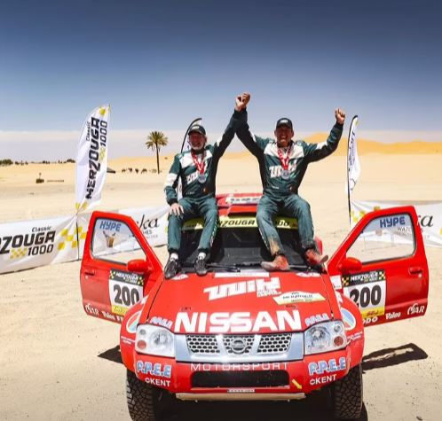

Resultados Rally de Barretos 2026 - Dia 1

Carros - Top 5
- 301-Marcos Baugart\Kleber Cincea-Ford Ranger-Szimic Racing-T1+-1:49:55.68
- 388-Gunter Hinklemann\Thiago Osternack-Ford Ranger-MSL Motorsport-ULT.BR-1:57:46.23
- 306-Fabricio Bianchini\Marcos Colvero - Ford Ranger-Bianchini Rally\Szimic Racing-ULT.BR-2:00:08.23
- 360-Mario Marcondes Neto\Artemio Paulucci-Ford Ranger-Szimic Racing-ULT.BR-2:00:50.23
- 332-José Nogueira\Alisson Antunes-Ford Ranger-Szimic Racing-ULT.BR-2:02:25.44
UTVs CBM - Top 5
- 119-Bruno Varela-Can-am Maverick R-Varela Rally Team-UTV Ultimate-1:49:42.30
- 135-Pedro Macdowell\Daniel Spolidorio-Can-am Maverick R-QI Racing-UTV Double Pró-1:52:02.07
- 101-André Hort-Can-am Maverick R-MH Racing\Cotton Racing--UTV Ultimate-1:52:07.68
- 103-Conrado Matsumoto-Can-am Maverick R-Cotton Racing-UTV Ultimate-1:52:08.89
- 104-Pedro Bienor-Can-am Maverick R-Forfun Racing-UTV 1-1:53:23.29
Creditos imagens Rallybr